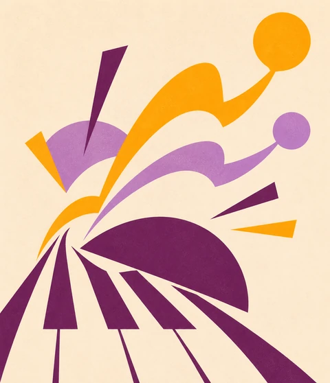

全部教材
设置
主题配色
纸白
米浆
雾蓝
淡紫
烟粉
薄荷
琥珀
石墨
午夜蓝

流行钢琴即兴演奏自学教程
给旋律配上左手，从分解和弦换成柱式或更密的织体，再从一条和弦进行或旋律出发即兴写出乐句。
据文武贝编著的同名教程改编。适合已有基本键盘演奏和读谱基础的读者。
从第一课开始
→
本书程序谱
→
第一章 基础知识
第 1 课
和弦
第 2 课
固定调与首调
第 3 课
唱谱与听音
第二章 常用的和弦连接
第 4 课
级数
第 5 课
几种流行歌曲常用和弦连接
第三章 歌曲的钢琴改编技巧
第 6 课
分解和弦（1）
第 7 课
分解和弦（2）
第 8 课
分解和弦（3）
第 9 课
柱式和弦
第 10 课
伴奏的三大要点
第 11 课
和弦的代替
第 12 课
旋律的双音技巧
第 13 课
旋律的多音技巧
第 14 课
结尾的演奏方法
第 15 课
加花
第四章 为歌曲配和弦
第 16 课
正三和弦
第 17 课
副三和弦
第 18 课
和弦的功能与连接
第 19 课
使用高级和弦
第 20 课
副属和弦
第 21 课
转位和弦
第 22 课
和声的非常规用法
第五章 即兴创作
第 23 课
节奏型
第 24 课
和声主导旋律
第 25 课
旋律主导和声
第 26 课
乐曲的结构